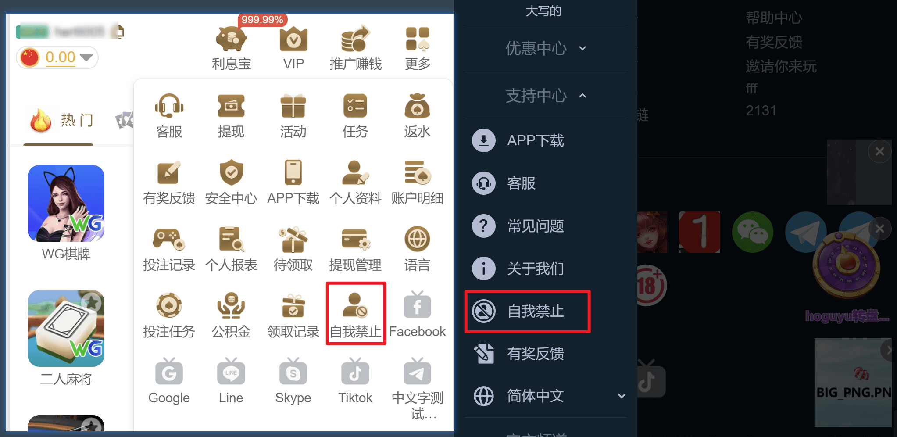
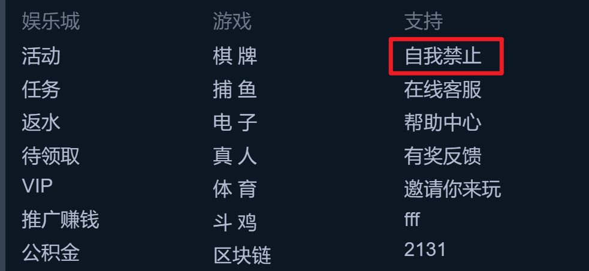
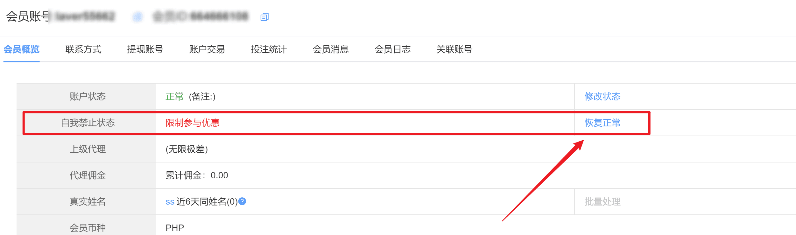
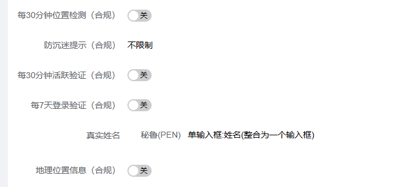
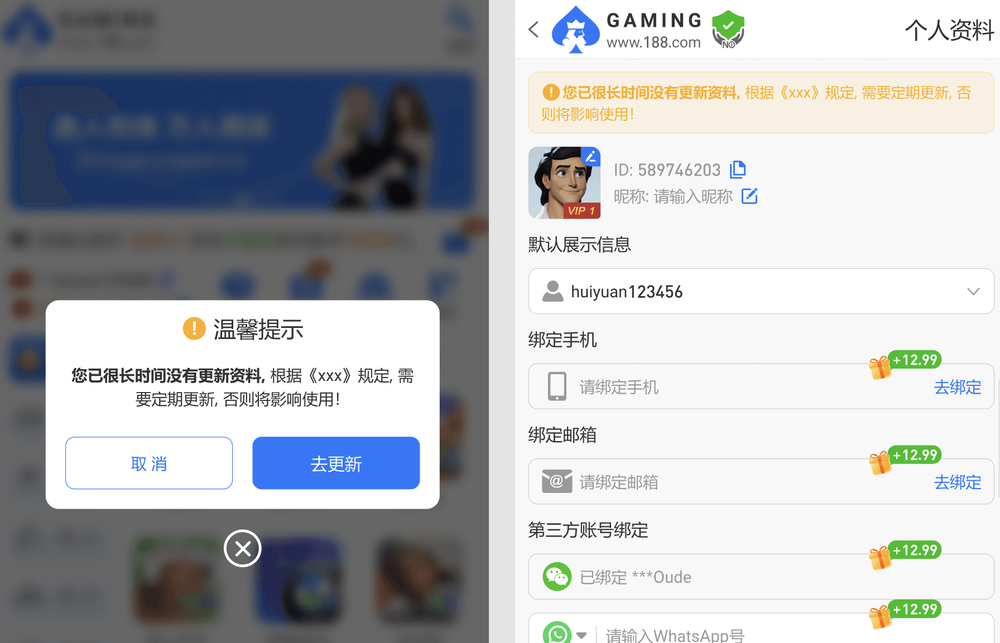

合规设置功能：用于申请相关博彩牌照
一、自我禁止
1、展示入口：勾选展示，配合勾选下方的入口可在客户端对应页面展示入口
隐藏则不展示
2、入口展示页面：
个人中心：默认勾选，不可修改
侧边栏/中部导航：经典版展示在中部导航，其余版式默认展示侧边栏

页脚：APP通用版式无页脚，勾选后也不会展示，其余版式根据对应的页脚样式展示，默认在【支持】下方

3、提交验证方式（后台勾选对应项目，用户在客户端进入页面前校验是否有相关的安全项）
注： 相关的安全项未设置时，是无法进入自我禁止页面的，提示到安全中心去绑定
新增生物识别，如面部、指纹是H5端不支持的则提示下载APP
4、自我禁止选项（后台勾选对应项目，用户在客户端可进行选择）：
限制游戏：用户点击后，客户端无法再进入任一游戏，多端登录状态下也会强制退出游戏
限制参与优惠：用户点击后，客户端无法再领取优惠（包含活动、优惠、任务、佣金、有奖反馈等）
限制充值：用户点击后，联动展示自定义限额输入框，用户可以自定义设置累计总充值限额。设置后，累计总充值金额未达到限额时，可以正常使用充值功能。累计总充值金额达到限额后，客户端充值入口无法进入
禁止登录：用户点击后，客户端会强制退出账户，再次登录该账户则提示开启了自我禁止功能无法登录
删除账户：用户点击后，会校验账号是否有还有余额、优惠、未领取的佣金等，如有金额则弹出提示二步确认提示
注：自我禁止功能仅限登录后使用，未登录是点击是提示登录注册弹窗
用户点击自我禁止后，如想取消，可以点击后台会员管理详情页——恢复正常，为用户处理，点击后及时生效，解除限制
用户点击删除账户，后台仅保留相关的操作记录，无法解除限制，用户后续也无法再次登录

5、禁止时间选项：支持多选，客户端按照后台设置的时间下拉展示
注：客户端选择【删除账户】，不需要时间选项
6、自我禁止规则说明：我们有做兜底文案参考，可根据客户端语言自定义设计
二、客户端cookie提醒
1、默认状态为隐藏，点击【修改】进入编辑状态，点击【展示】展示相关配置内容
2、功能说明：可选三种样式，可根据客户端语言展示不同文案配置，点击cookie政策跳转内容跳转到二级页面
3、配置过程中跟根据右边预览效果调整
4、功能只在web、H5端首页展示，APP端不展示，客户端无任何交互，点击关闭同意、确认都是关闭弹窗
三、合规开关
年龄确认弹窗(合规）
1、默认状态为隐藏，点击【展示】开启功能
2、年龄文案范围：16-30
3、提供默认文案，支持自定义及翻译功能，点击右边查看预览图
4、支持两种样式，中屏弹窗、全屏弹窗，默认为中屏
5、确认按钮开放编辑，限制24字符内
6、开启后，客户端的弹窗为第一优先级展示，点击【已满】继续客户端所有功能，点击【未满】客户端切断所有功能，直接退出
隐藏优惠模块入口（合规）
隐藏推广赚钱入口（合规）
1、默认状态为关闭，即客户端正常展示优惠、推广功能，开关开启则隐藏，修改状态保存后，客户端生效约需要10分钟时间
2、开启开关后，客户端没有优惠活动、推广相关入口，所有侧边栏、中部导航、底部导航都是自适应展示
3、开启后，用户有相关账变领取的，都正常推送，待开关关闭后用户刷新即可领取

每30分钟位置检测-申请巴西牌照才开启
1，web浏览器会提示是否允许地理位置 要授权才能注册/登录
2，进入游戏非巴西IP无法进入游戏
防沉迷提示-申请巴西牌照才开启
1，进入游戏开始计时，达到阈值弹窗，会员可以选退出游戏or继续游戏
每30分钟分钟活跃验证-申请巴西牌照才开启
1，待机30分钟，再次活跃需要输入登录密码/人脸识别验证通过，验证安全
每7天登录验证-申请巴西牌照才开启
1，最后登录时间与上次登录时间超过7天，需要验证登录密码/人脸识别验证通过，才能其他操作/游戏等
地理位置信息-申请巴西牌照才开启
开启，会员概览会显示注册位置弹窗/登录位置弹窗
每年资料更新弹窗（合规）
1、默认隐藏，点击【展示】开启功能
2、根据提示输入文案，该文案会在弹窗和个人资料页面展示
3、提示范围：用户一年未更新个人资料或者注册满一年后会弹出对应的提示，只针对正式会员
